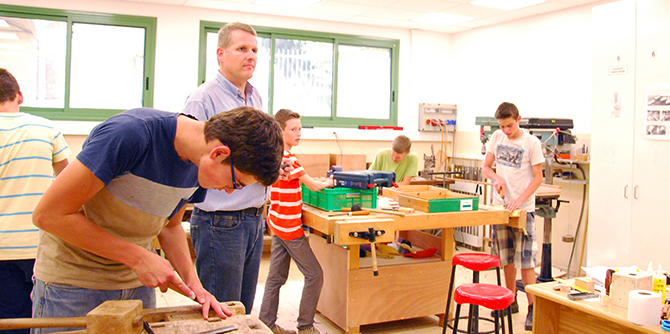
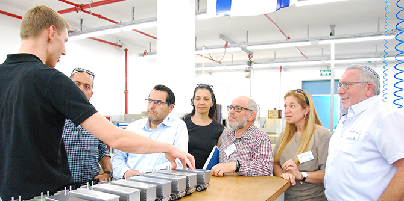

במסגרת המפגש התקיים סיור בבית הספר הטכנולוגי של קהילת בית-אל בזיכרון יעקב. צביקה יבניאלי, מנהל בית הספר, פרס לפני חברי הקבוצה את התפיסה הייחודית של הקהילה – קהילה נוצרית מגרמניה שהגיעה לישראל לפני יותר מ-50 שנה והתיישבה בזיכרון יעקב. לקהילה מערכת חינוך הכוללת גני ילדים, בית ספר יסודי ובית ספר תיכון הפועל על-פי מודל החינוך הדואלי המקובל בגרמניה, ובו התלמידים רוכשים מקצוע ועובדים במפעלי התעשייה. הביקור כלל סיור בסדנאות האלקטרוניקה והריתוך, שיחה עם תלמידים שהציגו כמה מן הפרויקטים שלהם וסיור בבית הספר התיכון.

בהמשך המפגש שמעה הקבוצה מפי ד"ר מרים קורקוס-פאנויאן, מנהלת מחלקת החינוך של זיכרון יעקב ובוגרת מחזור ז' של בית ספר מנדל למנהיגות חינוכית, כיצד נכשלו ניסיונותיה להקים מגמה טכנולוגית בבית הספר התיכון בשל התדמית הגרועה שיש לחינוך המקצועי בעיני רבים מן ההורים. לעומתה, מנדי רבינוביץ, מנהל קמפוס בית בירם של בית הספר הריאלי בחיפה ובוגר מחזור י' של בית ספר מנדל למנהיגות חינוכית, סיפר על ההצלחה של המגמה הטכנולוגית שנפתחה בבית ספרו לפני שלוש שנים. לדבריו, הטכנולוגיה "נכנסה" לבית הספר כחלק מחזונו לחולל שינוי חברתי דרך הטכנולוגיה. המגמה נפתחה עם 23 תלמידים, כיום לומדים בה 100, ויש בה צוות מורים מסור והורים שהתגייסו גם הם.

המפגש הבא של השולחן העגול יוקדש לפיתוח הנושא ולגיבוש החלטה בשאלה מה יהיה תוצר תהליך הלמידה ומהו המהלך הנדרש והכלים שיילמדו לשם כך.
{kind=link}
{kind=link}